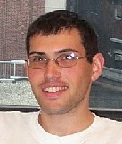

Ron Weiss

I'm currently a software engineer at Google Brain. While at Google I've worked on noise robust speech recognition and music recommendation, among other things. Previously, I was a postdoc working on music information retrieval with Juan Bello at MARL at NYU. Earlier still, I was a graduate research assistant working with Dan Ellis in the Laboratory for the Recognition and Organization of Speech and Audio (LabROSA). I defended my dissertation in May 2009 (watch me write it at about 50,000 * real-time here).
My research interests lie at the intersection of audio signal processing and machine learning. My dissertation research was devoted to model based source separation, but I also found time to do a bit of music signal analysis to create some wacky remixes on the side. I've also done some work on music information retrieval. You can find more (outdated) information on my projects page.
You might also be interested in some of my freely available code, including assorted Python audio processing modules, and useful Matlab tools for functional programming, easier plotting, training GMMs/HMMs, and interfacing with HTK. I've also spent some time hacking on the Gordon music database and scikits.learn.
Talks
- Training neural network acoustic models on (multichannel) waveforms, Speech and Audio in the Northeast (SANE) Workshop, October 2015. [ slides | video ]
Publications
| [1] | R. J. Skerry-Ryan, E. Battenberg, Y. Xiao, Y. Wang, D. Stanton, J. Shor, R. J. Weiss, R. Clark, and R. A. Saurous. Towards End-to-End Prosody Transfer for Expressive Speech Synthesis with Tacotron. In Proc. International Conference on Machine Learning (ICML), Stockholm, Sweden, July 2018. [ bib | arxiv | web ] |
| [2] | Y. Jia, Y. Zhang, R. J. Weiss, Q. Wang, J. Shen, F. Ren, Z. Chen, P. Nguyen, R. Pang, I. Lopez-Moreno, and Y. Wu. Transfer Learning from Speaker Verification to Multispeaker Text-To-Speech Synthesis. June 2018. [ bib | arxiv | web ] |
| [3] | J. Antognini, M. Hoffman, and R. J. Weiss. Synthesizing Diverse, High-Quality Audio Textures. June 2018. [ bib | arxiv | web ] |
| [4] | J. Shen, R. Pang, R. J. Weiss, M. Schuster, N. Jaitly, Z. Yang, Z. Chen, Y. Zhang, Y. Wang, R. J. Skerry-Ryan, R. A. Saurous, Y. Agiomyrgiannakis, and Y. Wu. Natural TTS Synthesis by Conditioning WaveNet on Mel Spectrogram Predictions. In Proc. IEEE International Conference on Acoustics, Speech, and Signal Processing (ICASSP), Calgary, Canada, April 2018. [ bib | arxiv | web ] |
| [5] | J. Chorowski, R. J. Weiss, R. A. Saurous, and S. Bengio. On Using Backpropagation for Speech Texture Generation and Voice Conversion. In Proc. IEEE International Conference on Acoustics, Speech, and Signal Processing (ICASSP), Calgary, Canada, April 2018. [ bib | arxiv | web ] |
| [6] | S. Toshniwal, T. N. Sainath, R. J. Weiss, B. Li, P. Moreno, E. Weinstein, and K. Rao. Multilingual Speech Recognition With A Single End-To-End Model. In Proc. IEEE International Conference on Acoustics, Speech, and Signal Processing (ICASSP), Calgary, Canada, April 2018. [ bib | arxiv | web ] |
| [7] | C.-C.Chiu, T. N. Sainath, Y. Wu, R. Prabhavalkar, P. Nguyen, Z. Chen, A. Kannan, R. J. Weiss, K. Rao, K. Gonina, N. Jaitly, B. Li, J. Chorowski, and M. Bacchiani. State-of-the-art Speech Recognition With Sequence-to-Sequence Models. In Proc. IEEE International Conference on Acoustics, Speech, and Signal Processing (ICASSP), Calgary, Canada, April 2018. [ bib | arxiv | web ] |
| [8] | J. P. Bello, P. Grosche, M. Müller, and R. Weiss. Content-Based Methods for Knowledge Discovery in Music. In Springer Handbook of Systematic Musicology, pages 823--840. Springer, March 2018. [ bib | DOI ] |
| [9] | C. Raffel, T. Luong, P. J. Liu, R. J. Weiss, and D. Eck. Online and Linear-Time Attention by Enforcing Monotonic Alignments. In Proc. International Conference on Machine Learning (ICML), Sydney, Australia, August 2017. [ bib | arxiv | http ] |
| [10] | Y. Wang, R. J. Skerry-Ryan, D. Stanton, Y. Wu, R. J. Weiss, N. Jaitly, Z. Yang, Y. Xiao, Z. Chen, S. Bengio, Q. Le, Y. Agiomyrgiannakis, R. Clark, and R. A. Saurous. Tacotron: Towards End-To-End Speech Synthesis. In Proc. Interspeech, Stockholm, Sweden, August 2017. [ bib | DOI | arxiv ] |
| [11] | R. J. Weiss, J. Chorowski, N. Jaitly, Y. Wu, and Z. Chen. Sequence-to-Sequence Models Can Directly Translate Foreign Speech. In Proc. Interspeech, Stockholm, Sweden, August 2017. [ bib | DOI | arxiv | slides ] |
| [12] | B. Li, T. N. Sainath, A. Narayanan, J. Caroselli, M. Bacchiani, A. Misra, I. Shafran, H. Sak, G. Pundak, K. Chin, K. C. Sim, R. J. Weiss, K. Wilson, E. Variani, C. Kim, O. Siohan, M. Weintraub, E. McDermott, R. Rose, and M. Shannon. Acoustic Modeling for Google Home. In Proc. Interspeech, Stockholm, Sweden, August 2017. [ bib | DOI | .pdf ] |
| [13] | S. Hershey, S. Chaudhuri, D. P. W. Ellis, J. F. Gemmeke, A. Jansen, R. C. Moore, M. Plakal, D. Platt, R. A. Saurous, B. Seybold, M. Slaney, R. J. Weiss, and K. Wilson. CNN Architectures for Large-Scale Audio Classification. In Proc. IEEE International Conference on Acoustics, Speech, and Signal Processing (ICASSP), New Orleans, USA, March 2017. [ bib | DOI | arxiv | .pdf ] |
| [14] | T. N. Sainath, R. J. Weiss, K. W. Wilson, B. Li, A. Narayanan, E. Variani, M. Bacchiani, I. Shafran, A. Senior, K. W. Chin, A. Misra, and C. Kim. Multichannel Signal Processing with Deep Neural Networks for Automatic Speech Recognition. IEEE Transactions on Audio, Speech, and Language Processing, February 2017. [ bib | DOI | .pdf ] |
| [15] | T. N. Sainath, R. J. Weiss, K. W. Wilson, B. Li, A. Narayanan, E. Variani, M. Bacchiani, I. Shafran, A. Senior, K. W. Chin, A. Misra, and C. Kim. Raw Multichannel Processing Using Deep Neural Networks. In New Era for Robust Speech Recognition: Exploiting Deep Learning. Springer, 2017. [ bib | DOI | .pdf ] |
| [16] | B. Li, T. N. Sainath, R. J. Weiss, K. W. Wilson, and M. Bacchiani. Neural Network Adaptive Beamforming for Robust Multichannel Speech Recognition. In Proc. Interspeech, San Francisco, USA, September 2016. [ bib | DOI | .pdf ] |
| [17] | T. N. Sainath, A. Narayanan, R. J. Weiss, E. Variani, K. W. Wilson, M. Bacchiani, and I. Shafran. Reducing the Computational Complexity of Multimicrophone Acoustic Models with Integrated Feature Extraction. In Proc. Interspeech, San Francisco, USA, September 2016. [ bib | DOI | .pdf ] |
| [18] | T. N. Sainath, R. J. Weiss, K. W. Wilson, A. Narayanan, and M. Bacchiani. Factored Spatial and Spectral Multichannel Raw Waveform CLDNNs. In Proc. IEEE International Conference on Acoustics, Speech, and Signal Processing (ICASSP), Shanghai, China, March 2016. [ bib | DOI | .pdf ] |
| [19] | T. N. Sainath, R. J. Weiss, K. W. Wilson, A. Narayanan, M. Bacchiani, and A. Senior. Speaker Location and Microphone Spacing Invariant Acoustic Modeling from Raw Multichannel Waveforms. In Proc. IEEE Automatic Speech Recognition and Understanding Workshop (ASRU), Scottsdale, USA, December 2015. [ bib | DOI | .pdf ] |
| [20] | T. N. Sainath, R. J. Weiss, A. Senior, K. W. Wilson, and O. Vinyals. Learning the Speech Front-End with Raw Waveform CLDNNs. In Proc. Interspeech, Dresden, Germany, September 2015. [ bib | .pdf ] |
| [21] | Y. Hoshen, R. J. Weiss, and K. W. Wilson. Speech Acoustic Modeling from Raw Multichannel Waveforms. In Proc. IEEE International Conference on Acoustics, Speech, and Signal Processing (ICASSP), Brisbane, Australia, April 2015. [ bib | DOI | .pdf ] |
| [22] | J. Weston, R. Weiss, and H. Yee. Affinity Weighted Embedding. In Proc. International Conference on Machine Learning (ICML), pages 1215--1223, Beijing, China, June 2014. [ bib | http | .pdf ] |
| [23] | J. Weston, R. J. Weiss, and H. Yee. Nonlinear Latent Factorization by Embedding Multiple User Interests. In Proc. ACM Conference on Recommender Systems (RecSys), pages 65--68, Hong Kong, October 2013. [ bib | DOI | .pdf ] |
| [24] | J. Weston, H. Yee, and R. J. Weiss. Learning to Rank Recommendations with the k-order Statistic Loss. In Proc. ACM Conference on Recommender Systems (RecSys), pages 245--248, Hong Kong, October 2013. [ bib | DOI | .pdf ] |
| [25] | J. Weston, R. Weiss, and H. Yee. Affinity Weighted Embedding. In International Conference on Learning Representations (ICLR), Scottsdale, USA, May 2013. [ bib | arxiv | http | .pdf ] |
| [26] | J. Weston, C. Wang, R. Weiss, and A. Berenzweig. Latent Collaborative Retrieval. In Proc. International Conference on Machine Learning (ICML), Edinburgh, Scotland, June 2012. [ bib | arxiv | http | .pdf ] |
| [27] | R. J. Weiss and J. P. Bello. Unsupervised Discovery of Temporal Structure in Music. IEEE Journal of Selected Topics in Signal Processing, 5(6):1240--1251, October 2011. [ bib | DOI | .pdf ] |
| [28] | F. Pedregosa, G. Varoquaux, A. Gramfort, V. Michel, B. Thirion, O. Grisel, M. Blondel, P. Prettenhofer, R. Weiss, V. Dubourg, J. Vanderplas, A. Passos, D. Cournapeau, M. Brucher, M. Perrot, and É. Duchesnay. scikit-learn: Machine Learning in Python. Journal of Machine Learning Research, 12:2825--2830, October 2011. [ bib | arxiv | http | .pdf ] |
| [29] | R. J. Weiss, M. I. Mandel, and D. P. W. Ellis. Combining Localization Cues and Source Model Constraints for Binaural Source Separation. Speech Communication, 53(5):606--621, May 2011. Special issue on Perceptual and Statistical Audition. [ bib | DOI | .pdf ] |
| [30] | T. Bertin-Mahieux, G. Grindlay, R. J. Weiss, and D. P. W. Ellis. Evaluating Music Sequence Models Through Missing Data. In Proc. IEEE International Conference on Acoustics, Speech, and Signal Processing (ICASSP), pages 177--180, Prague, Czech Republic, May 2011. [ bib | DOI | .pdf ] |
| [31] | R. J. Weiss and J. P. Bello. Identifying Repeated Patterns in Music Using Sparse Convolutive Non-Negative Matrix Factorization. In Proc. International Society for Music Information Retrieval Conference (ISMIR), pages 123--128, Utrecht, Netherlands, August 2010. Best Paper Award. [ bib | web | slides | .pdf ] |
| [32] | T. Bertin-Mahieux, R. J. Weiss, and D. P. W. Ellis. Clustering Beat-Chroma Patterns in a Large Music Database. In Proc. International Society for Music Information Retrieval Conference (ISMIR), pages 111--116, Utrecht, Netherlands, August 2010. [ bib | web | .pdf ] |
| [33] | T. Cho, R. J. Weiss, and J. P. Bello. Exploring Common Variations in State of the Art Chord Recognition Systems. In Proc. Sound and Music Computing Conference (SMC), pages 1--8, Barcelona, Spain, July 2010. [ bib | .pdf ] |
| [34] | M. I. Mandel, R. J. Weiss, and D. P. W. Ellis. Model-Based Expectation-Maximization Source Separation and Localization. IEEE Transactions on Audio, Speech, and Language Processing, 18(2):382--394, February 2010. [ bib | DOI | web | .pdf ] |
| [35] | R. J. Weiss and D. P. W. Ellis. Speech Separation Using Speaker-Adapted Eigenvoice Speech Models. Computer Speech and Language, 24(1):16--29, January 2010. Speech Separation and Recognition Challenge. [ bib | DOI | .pdf ] |
| [36] | R. J. Weiss and D. P. W. Ellis. A Variational EM Algorithm for Learning Eigenvoice Parameters in Mixed Signals. In Proc. IEEE International Conference on Acoustics, Speech, and Signal Processing (ICASSP), pages 113--116, Taipei, Taiwan, April 2009. [ bib | DOI | poster | .pdf ] |
| [37] | R. J. Weiss. Underdetermined Source Separation Using Speaker Subspace Models. PhD thesis, Department of Electrical Engineering, Columbia University, 2009. [ bib | slides | .pdf ] |
| [38] | R. J. Weiss, M. I. Mandel, and D. P. W. Ellis. Source Separation Based on Binaural Cues and Source Model Constraints. In Proc. Interspeech, pages 419--422, Brisbane, Australia, September 2008. [ bib | http | poster | .pdf ] |
| [39] | R. J. Weiss and T. Kristjansson. DySANA: Dynamic Speech and Noise Adaptation for Voice Activity Detection. In Proc. Interspeech, pages 127--130, Brisbane, Australia, September 2008. [ bib | http | poster | .pdf ] |
| [40] | R. J. Weiss and D. P. W. Ellis. Monaural Speech Separation Using Source-Adapted Models. In Proc. IEEE Workshop on Applications of Signal Processing to Audio and Acoustics (WASPAA), pages 114--117, New Paltz, USA, October 2007. [ bib | DOI | web | slides | .pdf ] |
| [41] | R. J. Weiss and D. P. W. Ellis. Estimating Single-Channel Source Separation Masks: Relevance Vector Machine Classifiers vs. Pitch-Based Masking. In Proc. ISCA Tutorial and Research Workshop on Statistical Perceptual Audition (SAPA), pages 31--36, Pittsburgh, USA, September 2006. [ bib | http | slides | .pdf ] |
| [42] | D. P. W. Ellis and R. J. Weiss. Model-Based Monaural Source Separation Using a Vector-Quantized Phase-Vocoder Representation. In Proc. IEEE International Conference on Acoustics, Speech, and Signal Processing (ICASSP), pages V--957--960, Toulouse, France, May 2006. [ bib | DOI | .pdf ] |
Teaching
I have taught/been a teaching assistant for:
- Spring 2010: E85.2607 Advanced Digital Signal Theory (NYU)
- Spring 2007: ELEN E4896/E4998 Music Signal Processing
- Spring 2005: ELEN E4896 Music Signal Processing
- Fall 2004: GIST E4060/E3060 Introduction to Genomic Information Science and Technology
- Fall 2003: COMS W4118 Operating Systems I